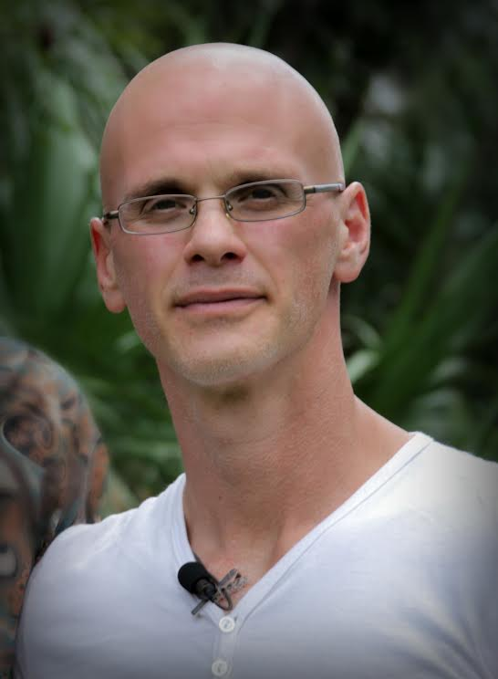
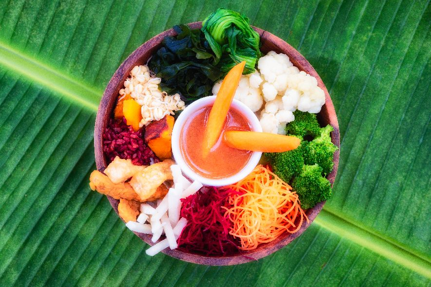
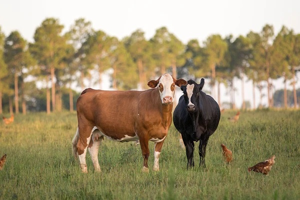
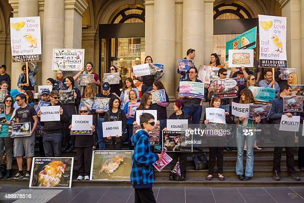

Hello everyone
I am Sam Gotten and I became vegan almost 10 years ago.
The main reason was that I love animals and I didn't want to support their suffering but, along the way,
I found out about the health benefits and sustainability too.

At the beginning, I was unsure about what to eat so I kept it simple: veggies with rice and beans, mostly :)
In time, I heard about 30 days vegan meals plan.
It was really insteresting and, certainly, it looked delicious.
In the other hand, I realized it was actually extremely tasty and it can be as healthy as you want it to be.

I started then a deeper research on this field and learned about worldwide standard industrial farm practices.
For example, the fact that male chicks are inmediately grinded alive after birth since they cannot lay eggs;
the constant need to artificially impregnate cows so that they can produce milk,
or the fact the baby cows are removed from their mother after birth, in order to prevent them from consuming
the milk the industry provides to supermarkets.

After several years with this lifestyle, and idea came to my mind: it wasn't only me who didn't know about all this and,
somehow, I wanted everyone to know, so that we all could make better choices.
In that moment, I decided to create a platform to help the cause, and that was
when I reached out to the other vegan activists who make part of this project.